Deciding to start NIV
NIV is indicated in acute hypercapnic respiratory acidosis that persists or develops despite optimal medical therapy — but only once you've screened out reasons it may do more harm than good. Successful NIV makes intubation avoidable.
Indications
- pH <7.35, PaCO₂ >6.5 kPa, RR >23
- Most effective & beneficial: pH 7.25–7.35
- pH <7.25 may still work, but higher failure rate — use in an appropriate clinical setting with rapid access to intubation
Benefits vs. failure flags
Absolute contraindications — do not proceed / escalate care
- Severe facial deformity
- Facial burns / trauma / recent facial or airway surgery
- Fixed upper airway obstruction
- Cardiorespiratory arrest / unable to sustain spontaneous breathing
- Haemodynamic instability (e.g. hypotension with impaired perfusion, serious dysrhythmias)
- Unable to protect own airway
- Copious, unmanageable secretions
- Untreated pneumothorax
- Cerebrospinal fluid rhinorrhoea
Relative contraindications — proceed with heightened supervision
- pH <7.15 (or pH <7.25 plus an additional adverse feature)
- GCS <8
- Confusion / agitation
- Cognitive impairment
Any of these warrant a higher level of supervision, consideration of HDU/ICU placement, and an early appraisal of whether to continue NIV or convert to invasive ventilation.
Complications & fixes
Most NIV complications are predictable and preventable at the bedside — know the fix before you need it.
Facial & nasal pressure injury
Minimise mask pressure with intermittent NIV; schedule breaks every 30–90 min; balance strap tension; protect vulnerable points with dressings; consider mask rotation.
Gastric distension
Minimise by keeping peak inspiratory pressure below 25 cmH₂O.
Dry mucosa & thick secretions
Provide humidification when indicated, plus daily oral care.
Aspiration of gastric contents
Avoid NIV in patients with ongoing vomiting or haematemesis.
Barotrauma
Lower risk with NIV compared to invasive mechanical ventilation.
Hypotension
Monitor blood pressure — positive intrathoracic pressure can reduce venous return.
Infection control & PPE
NIV (BiPAP & CPAP) is an aerosol-generating procedure (AGP). Apply standard precautions, plus transmission-based precautions where indicated, for every patient.
| Area | Recommended PPE (CCIDER, 2024) |
|---|---|
| High-risk patient areas Fever rooms of GOPCs; isolation rooms incl. ICU & AEDs | Surgical respirator · Eye protection · Isolation gown · Disposable gloves · Cap (optional) |
| Other patient areas | Surgical mask / surgical respirator · Eye protection · Isolation gown · Disposable gloves |
Room requirements
- No known infection: adequate ventilation, ≥6 air changes/hour (ACH); local exhaust suction allowed if 6 ACH room unavailable
- Transmissible respiratory infection: isolation room ≥12 ACH via negative pressure, exhausted outside or HEPA-filtered
- If unavailable: well-ventilated single room with en-suite, doors closed — never a positive-pressure single room
- No separate room? Cohort patients sharing the same confirmed pathogen
Practical AGP precautions
- Never use an oro-nasal mask connected to a whisper-swivel device — it can contaminate room air
- Minimise leaks and avoid excessive inspiratory pressure
- Avoid heated humidification when infection risk is present
- Consider double-circuit tubing, or a full-face mask/helmet with a tight neck seal, in ICU/HDU
AGPs with documented increased transmission risk: intubation/extubation, CPR, awake bronchoscopy, open suctioning (incl. tracheostomy care), autopsy, NIV (BiPAP/CPAP), sputum induction, and spray-generating dental procedures. Nebulisers, NPA/NPS and high-flow O₂ (≥6 L/min) carry theoretical droplet-dispersal risk — treat with the same precautions as AGPs in high-risk areas; give nebulisers via mouthpiece where possible.
Modes, set-up & titration
Two pressures do the work in BiPAP — know what each one is buying you before you touch the dial.
| EPAP (expiratory) | IPAP (inspiratory) |
|---|---|
| Offsets intrinsic PEEP, ↓ work of breathing | Supports inspiratory effort, ↓ work of breathing |
| Keeps alveoli partially inflated | Improves tidal volume |
| Improves oxygenation | Improves CO₂ removal |
Spontaneous
Machine delivers IPAP when flow sensors detect the patient's own inspiratory effort, then cycles back to EPAP. Fully patient-triggered.
Spontaneous-timed
Same as spontaneous mode, plus a backup rate — guarantees a minimum breaths/min if the patient fails to trigger. Most commonly used in COPD.
Timed
IPAP/EPAP cycling is purely machine-triggered at a set rate (breaths/min) — no reliance on patient effort.
Volume Assured Pressure Support (VAPS)
Varies the pressure-support level automatically to hit a preset tidal volume, minute ventilation, or target alveolar ventilation. Better comfort, fewer side effects (e.g. gastric distension) than fixed pressure.
AVAPS-AE / iVAPS-AE
Auto-adjust EPAP to keep the upper airway open during sleep on top of volume assurance — can mean lower overall pressure delivery, better comfort and compliance.
Proportional Assist Ventilation (PAV)
Responds rapidly to the patient's own ventilatory effort; adjusting the gain on flow/volume signals selects what proportion of the work of breathing is assisted.
Neurally-Adjusted Ventilatory Assist (NAVA)
Uses a diaphragmatic EMG signal (via a specialised naso-gastric catheter with electrodes placed adjunct to the diaphragm) to control breath delivery, proportional to the patient's own effort — effective for synchrony via oro-nasal/helmet interfaces, though observational data show no clear difference vs. standard NIV-pressure support.
Choosing an NIV model Section 1.7
- Auto-Trak Sensitivity: recognises and compensates for unintentional leaks, automatically adjusting trigger/cycling algorithms. Improves patient–ventilator synchrony, but isn't ideal for patients with weak triggering ability, who often trigger better on devices that allow fine manual adjustment of trigger sensitivity.
- Flow rate: in general, the higher a model's maximum flow rate (>200 L/min), the wider the variety of patients it can serve.
- Battery: check for internal and external battery if treatment will involve mobility training with the NIV, or outdoor use.
- Other factors: availability of the device and matching interfaces; financial considerations; physician/clinician/patient preference; and the trade-off between mask comfort and effectiveness.
Initial set-up, in order
- Sit the patient up; explain the therapy clearly
- Choose the right interface and size; hold gently over the face; cue nose-breathing with a closed mouth seal
- Connect O₂ and adjust to current demand
- Confirm the exhalation port is patent and correctly connected
- Start IPAP 15 / EPAP 3 cmH₂O — severe acidosis (pH<7.25): start IPAP 20
- Set backup rate 16–20/min
- Set inspiratory time 0.8–1.2 s (target I:E 1:3)
- Set FiO₂ to reach SpO₂ 88–92%
- Once tolerated, tighten straps just enough to avoid major leak; pad pressure areas
Final settings always follow the physician's decision, per patient tolerance and the model available.
Titration & monitoring
⚠️Optimise NIV settings before raising FiO₂ further.If IPAP >30 cmH₂O is indicated → get specialist input.
⚠️Observe for change in RR, TV and sign of respiratory distress.
⚠️Institute alternative management plan if ABGs worsen after 1-2 hrs of NIV fitted.
Interfaces & mask fitting
The full-face (oro-nasal) mask is the default at the start of acute NIV — mouth leaks and dislodgement make nasal interfaces less effective until the patient stabilises.
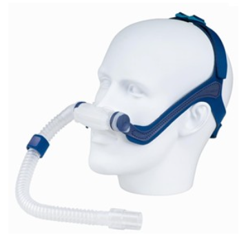
Nasal pillow / prongs
Pros: minimal deadspace, well tolerated in claustrophobia, allows speech, expectoration & glasses.
Cons: uncomfortable, poor with nasal congestion or mouth-breathing.
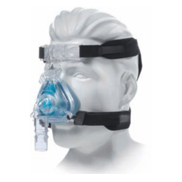
Nasal mask
Pros: less deadspace, tolerated in claustrophobia, lower aspiration risk if vomiting, allows speech and eating, fit for less severe cases.
Cons: nasal bridge pressure, more leak, limited if nasal deformity/blockage.
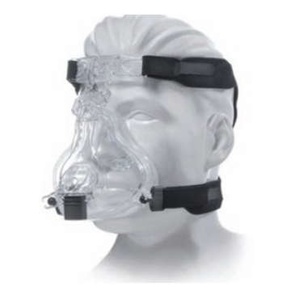
Full face (oro-nasal) mask
Pros: handles mouth leak, suits edentulous or mouth-breathing patients, better general ventilation, suited to higher illness severity.
Cons: interferes with speech/eating, higher aspiration/rebreathing & claustrophobia risk, mouth opening worsens upper airway obstruction.
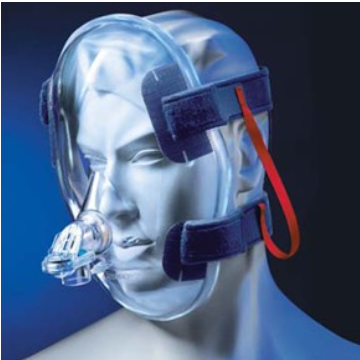
Total face mask
Pros: good option when a seal can't be achieved with a nasal mask, or skin breakdown develops.
Cons: interferes with speech/eating/expectoration, eye dryness & claustrophobia risk, mouth opening worsens upper airway obstruction.
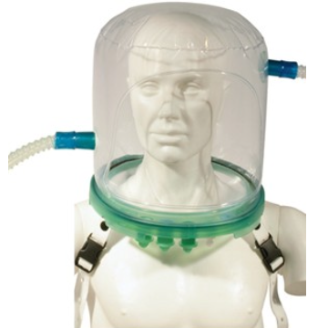
Helmet
Pros: suited to hypoxaemic acute failure needing many days of continuous ventilation.
Cons: higher claustrophobic reaction risk.
Mask rotation
During acute 24-hour NIV: oro-nasal by day, total face at night — relieves the nasal bridge. As the patient improves, switch to a nasal mask and train nasal breathing.
Fitting basics 1.10
- Strap tight enough to prevent leak, loose enough for 1–2 fingers to slide underneath
- Size using the manufacturer's sizing gauge against facial landmarks (sides of nostrils, nasal bridge zone, below nose/above lip — or around the mouth for a full-face mask)
- Check pressure points at the nasal bridge/forehead, cheeks, chin and ears before and after treatment
- Humidification isn't routine — consider heated humidification for mucosal dryness or thick secretions (avoid if infection risk is present)
- Sometimes leakage may be intentional. Some devices allow leakage to wash out CO2. The allowed leakage value, please refer to the manufacturer's manual.
| Problem | Adjustment |
|---|---|
| Leak around/below mouth | Raise stability selector — more pressure to base of cushion |
| Leak around nose / into eyes | Lower stability selector — more pressure to top of cushion |
| Air leak to eye + lip pressure sore | Selector too high / bottom strap too tight — click down, loosen bottom strap |
| Air leak to mouth + forehead/nose-bridge sore | Selector too low / top strap too tight — click up, loosen top strap |
Sizing the mask
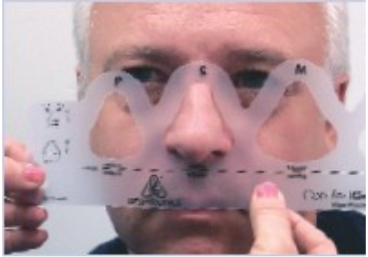
- Nasal mask: place the sizing gauge over the patient's nose; choose the smallest size that is wide enough to extend beyond the nostrils but does not obstruct normal nasal breathing.
- Full face mask: place the sizing gauge over the nose and mouth with the mouth slightly opened; choose the smallest cushion size that is wider than the mouth and long enough to extend beyond the lower lip.
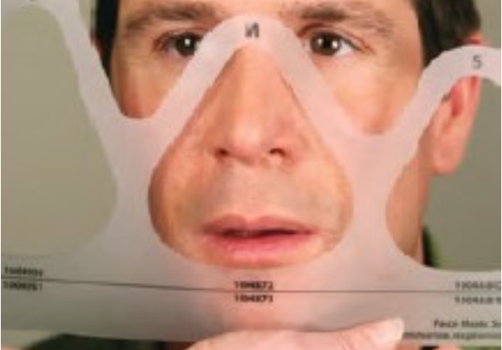
Fitting the mask
- Nasal mask: top of the mask just above the junction of the nasal bone and cartilage (dorsum of the nasal bridge); don't pinch the nose at the sides; bottom of the mask just above the upper lip; check the patient's comfort.
- Full face mask: top of the mask just above the junction of the nasal bone and cartilage; don't pinch the nose at the sides; bottom of the mask below the lower lip while the mouth is slightly open; check the patient's comfort.
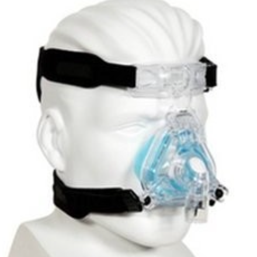
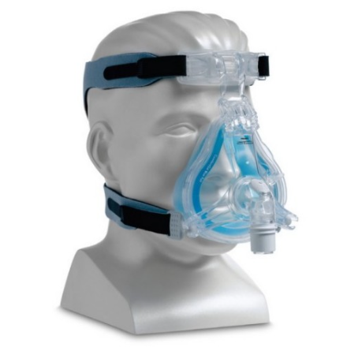
 Pressure sites
Pressure sitesExhalation devices Section 1.9
An open single-limb NIV circuit needs an exhalation port — either a vented mask with a built-in port, or a non-vented mask paired with an extra port in the circuit — to wash out CO₂ and prevent rebreathing. Never let tape, clothing or sputum occlude it. Infection risk varies by port type: avoid masks with built-in exhalation ports during acute respiratory failure with possible infection, and always fit a bacterial filter before attaching a disposable exhalation port.
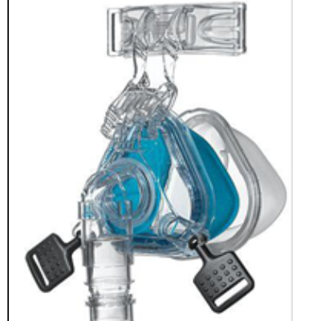
Built-in exhalation port — moulded into the mask itself.
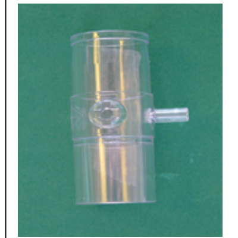
Disposable exhalation port — connects a mask that has no built-in port.
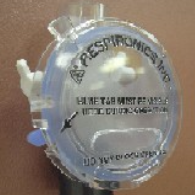
Plateau expiratory valve — a variable hole giving a near-constant leak flow across a wide range of operating pressures.
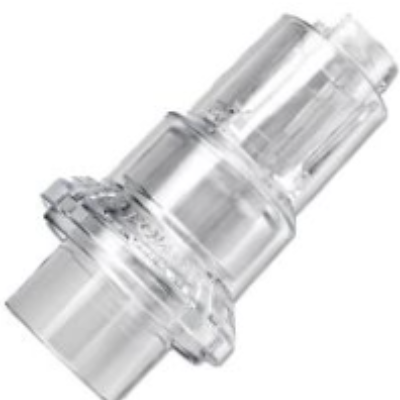
Whisper Swivel II valve — directs exhaled air out quietly; the swivel stops the hose kinking. Avoid pairing with an oro-nasal mask when infection precautions apply (see Infection control).
Reading patient–ventilator asynchrony
Asynchrony is the mismatch between the patient's own breath and the ventilator's delivered breath. Spot it from the patient (RR, accessory muscle use, nasal flaring) and confirm it on the waveform.
Patient effort fails to trigger a breath → ↓minute ventilation, ↓inspiratory flow, ↑work of breathing.
Possible causes
- ↓ Respiratory drive (check sedation / consciousness)
- Weak respiratory muscles (hyperinflation, neuromuscular disease)
- Excessive mask leak
- Trigger sensitivity too low
- Intrinsic PEEP — common in COPD hyperinflation
- Untreated bronchospasm/air-trapping
Fixes
- Address sedation/consciousness as appropriate
- ↑ trigger sensitivity + respiratory muscle training
- Recheck and refit the mask
- Titrate trigger sensitivity
- ↑ EPAP to offset intrinsic PEEP
- Treat the underlying disease (e.g. bronchodilators)
A breath is delivered with no patient effort — may feel like "air-stacking"; a sudden or persistently high RR shows on the ventilator.
Possible causes
- Circuit leak misread by the machine as inspiratory effort
- Trigger sensitivity too high
Fixes
- Check circuit integrity and connections
- Titrate trigger sensitivity down
Ventilator continues insufflation beyond the patient's own inspiratory phase → "air-stacking", shortened expiratory time, possible auto-PEEP, an abrupt end-inspiratory pressure spike.
Possible causes
- Excessive inspiratory time
- Excessive air leak
Fixes
- Decrease inspiratory time
- Check mask fit/circuit — with leak present, time-cycled PSV synchronises better than flow-cycled PSV
The exhalation valve opens during the patient's own inspiration → "air-starvation", ↑work of breathing and RR.
Fix
Increase inspiratory time.
Low tidal volume
<6–8 mL/kg (obstructive) or <8–10 mL/kg (restrictive); ↑RR, accessory muscle use.
Consider: ↑IPAP/PS, ↑Ti, ↓rise time.
Rise time too slow
Takes too long to reach target pressure → ↑work of breathing.
Fix: shorten the rise time.
Rise time too short
"Air overshoot" sensation, may cause premature cycle termination from high pressure.
Fix: lengthen the rise time.
Physiotherapy assessment & intervention
Aims shift with the blood gas picture: stabilise and clear first, then rebuild function once compensated.
Objectives
In-patient (2.1.1)
- Reduce work of breathing and improve ventilation efficiency
- Facilitate weaning and enhance post-extubation support
- Provide intensive chest physiotherapy and early mobilisation for indicated cases
- Improve exercise tolerance and functional capacity
- Enhance pre- and post-discharge support for patients needing home O₂, NIV or a ventilator — including home visits to check compliance with home ventilatory devices
Community (2.1.2)
- Improve NIV compliance at home
- Empower the patient and care-giver in self-management of NIV
- Prevent complications associated with NIV
- Monitor signs and symptoms so timely, appropriate management can be given during acute deterioration
- Empower patients in self-management through breathing control and bronchial hygiene techniques when symptoms and signs worsen
Aims by blood-gas phase
Aims — decompensated (pH <7.35)
- Optimise V/Q matching
- Reduce work of breathing
- Improve ventilation efficiency
- Facilitate airway clearance
- Prevent complications
Aims — compensated (pH ≥7.35)
- Facilitate the weaning process
- Improve functional ability around the bedside
- Improve exercise tolerance
Assessment checklist
- History & premorbid mobility
- Conscious level & subjective complaint
- Vitals: T, BP, HR, ECG, RR, SpO₂, TcCO₂
- Breathing pattern, accessory muscles, auscultation, cough, sputum
- Limbs: oedema, ROM, power, mobility
- CXR, ABGs, CBP, NPA/culture
- NIV: mode/settings, O₂, mask fit/leak, TV/MV, synchrony, pressure sores, compliance, airway protection, gastric distension
- DNACPR / advance directives/ EoL
Dyspnoea management
- Positioning — lean forward with arm support
- Pursed-lip / relaxed controlled breathing once weaned off NIV
- Relaxation exercises, e.g. mindful breathing
- AcuTENS / acupressure
- Fan therapy during NIV-off periods
Secretion management
- Effective coughing technique
- Postural drainage & manual techniques
- High-frequency chest wall oscillation
- Oscillating PEP therapy
- Mechanical in-exsufflator (neuromuscular disease)
- Suction, if indicated
Open suctioning on a patient using NIV — the safe sequence
- Explain indication/procedure/risk; respect refusal or a preferred alternative
- Note baseline vital signs
- Maintain SpO₂ above 92% by adjusting FiO₂ or flow
- Pre-oxygenate by increasing FiO₂ if necessary
- Place NIV on "stand-by"; unlock and remove the headgear
- Apply a matching oxygen delivery device — FiO₂ 0.21–0.4: nasal cannula 1–6 L · 0.4–0.6: mask 5–8 L/min · >0.6: non-rebreathing mask 12–15 L/min or HFNO
- If unable to cough it out, perform open suctioning under standard infection-control precautions
- Closely monitor SpO₂, heart rate and rhythm throughout
- Reapply the interface; adjust headgear tension (1–2 fingers should fit underneath)
- Restart NIV; continue monitoring SpO₂, increasing FiO₂ if needed; cue synchrony
- Auscultate, tidy up, ask for the patient's feedback; recheck usual settings; document vitals and report if they fail to return to baseline
Physical activity, by phase
- Decompensated (pH <7.35): ROM exercises + ankle pumps ± neuromuscular electrical stimulation if indicated
- Compensated (pH ≥7.35, ± NIV): ROM/ankle pumps → sitting out → standing ± stepping → walking (± aid) → strength & endurance training
Points to note: restore correct NIV settings after treatment; minimise aerosol risk; have a matched oxygen delivery device ready if off NIV; pre-oxygenate through NIV before chest physio if needed.
Titrating NIV around a treatment session
⚠️Monitor throughout and after: HR/ECG, SpO₂, RR, BP (prn), breathing pattern/accessory muscle use, auscultation, conscious level, perceived dyspnoea, patient–ventilator synchrony, air leak, expired TV, TcCO₂. If settings still need adjustment after treatment, notify nursing/medical staff.
Weaning & the rehabilitation pathway
There's no single mandated weaning protocol — the guideline offers three approaches. The constant principle: maximise NIV time in the first 24 hours, then taper.
Weaning criteria — all should be met
- Arterial pH ≥ 7.35
- SpO₂ >90% on FiO₂ ≤50% (or PaO₂/FiO₂ >200 mmHg)
- RR ≤25/min · HR ≤120/min · SBP ≥90 mmHg
- No agitation, diaphoresis or anxiety
Discontinue NIV for 1–3 hours during the day, providing O₂ via cannula or mask, monitoring SpO₂/vitals closely. Extend the off-periods over 2–3 days (daytime NIV down from 8–10 hours to 4–6 hours) while preserving nocturnal NIV. NIV is often discontinued by day 3–4, or at the physician's discretion.
Gradually reduce IPAP and EPAP by 2–4 cmH₂O every 4–6 hours. NIV may be removed once the patient tolerates IPAP 6–8 cmH₂O and EPAP 4–6 cmH₂O.
Remove NIV immediately once weaning criteria are fulfilled. Evidence suggests this does not increase weaning failure, though sample sizes have been underpowered — more trials are needed to confirm the effect.
Whichever strategy is used: return the patient to their previous NIV settings immediately at any sign of distress, wean gradually, and let PaCO₂ trends on/off NIV guide the pace.
Decompensated blood gases
- Correct positioning, breathing control & synchronisation, pre-weaning strategies
- Chest physiotherapy as indicated
- Passive exercise as appropriate; NMES if indicated
Gases compensated, PaCO₂ not yet at baseline
- Active weaning strategies with daily case review
- Active + passive exercise ± NIV, sitting out, standing
- Strength & endurance training begins
PaCO₂ may be back to baseline
- Ambulation, strength & endurance training, functional measurement
- Regular case review, proactive discharge planning ± NIV
- Discharge to step-down ward, extended facility, or home
🔼NIV compliance enhancement
- Check for proper mask fitting before and after physiotherapy
- Observe for any associated complications such as facial pressure sore, nasal congestion, nasal/oral dryness, eye irritation and gastric insufflation
- Teach breathing control to facilitate synchrony with machine
🏠Home NIV — who benefits
- Reduces hospitalisations and exacerbations, improves quality of life
- Titrate to normalise/reduce PaCO₂; fixed pressure-support mode is the first-choice ventilator mode
- Candidates: chronic stable hypercapnic COPD, or after a life-threatening hypercapnic failure episode where hypercapnia persists
Home NIV & telemonitoring
Telemonitoring turns a home NIV device into an early-warning system — use it to catch problems before they become an admission.
When to use it
- New NIV users, or current users on a new setting
- Poor compliance, or frequent hospital admission
- Deteriorating hypercapnic symptoms — morning headache, tiredness, desaturation, general malaise
What it's for
- Builds compliance & self-efficacy in home NIV management
- Objectively documents SpO₂ and therapy compliance
- Enables remote titration of NIV/O₂ settings
- Cuts travel and home-visit burden
- Flags emergencies early, reducing unplanned admission
- Facilitates earlier discharge
Telemonitoring Parameter
Total study time (TST), timing of NIV utilization, extent of leakage, TV, RR, IPAP, EPAP and the O2 saturation are the common data that can be retrieved from most telemonitoring system.
Poor application
Poor mask fitting or missing accessories → excessive leak.
Poor compliance
Short total study time — check for discomfort (dry mouth, nasal bleeding, alarm noise), poor insight, claustrophobia or machine mal-function.
Sub-optimal therapy
Low TV (<8–10 mL/kg), sub-optimal pressure support or insufficient triggered RR — check for chest deterioration, asynchrony, mouth-breathing, or circuit fault.
Abnormal SpO₂ in COPD
Community workflow
Retrieve telemonitoring data → analyse → identify the likely cause of desaturation/poor compliance → phone follow-up to reassess and coach self-management → ad-hoc community physiotherapy visit for urgent/complex cases → escalate to the respiratory physician for further investigation, crisis protocol activation, re-titration, device replacement, an earlier follow-up, or admission → document for the whole team.
Clinical knowledge check
Five case-based questions. Pick an option to see the rationale immediately — work through your clinical reasoning, not just recall.